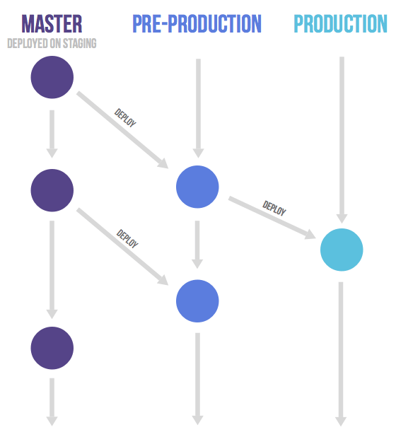

Git

Linus’ Quest for a
Source Control Management System
“If you’re not distributed, you are not worth using”
“If you perform badly, you are not worth using”
“And if you cannot guarantee that the stuff I put into an SCM comes out exactly the same, you are not worth using”
“Quite frankly, that pretty much took care of everything out there”
“The end result was I decided I can write something better than anything out there in two weeks”
Git
- Distributed
- Performant
- Trustworthy
- Content tracking system
- Supports branching and merging with ease
(keeping the information in a graph) - Relatively easy to build clean history
- Supports many different workflows
“If you are doing something really fast people start using it differently”
Distribution

Distribution
- Everyone has a copy of the entire repository
– everything they need is on their machine - No single place is more important than any other
– some repos can be “special” only formally
(or socially, within a network of trust) - Everyone works freely in his/her own repository
– and they can do anything in it - Making changes without worries
– you can always go back, it’s not public beforepush - Every branch is a version/a fork
- Performance, no complicated access management,
offline work, ... - Especially helpful for (big) groups at
various locations and open source teams
Distributed Workflows
Linux workflow

Centralized workflow

“Decentralized but centralized”

Integration-Manager workflow
What Will We Learn About?
- The philosophy of git
- Git internals and how they come together
- Git "externals"
- Showing/Analysing repository content
- Managing all the parts of the repository
- Creating and manipulating commits & content
- Merging and conflicts resolution
- Remote repositories
- Building clean history
- Some fun tools – reflog, bisect, stash, etc
- Not to be afraid to do something (as there is always a way back)
- Good practices
- Workflows – how to work together as a team
Git Repository
- Objects
- Index
- Working directory
- Refs
Objects
Immutable Data Structures
They change the way we program
Especially useful for distributed systems
Objects
- Blobs
- Trees
- Commits
- Tags
Every object is immutable
and identified by the SHA-1 hash of its content
Blob
- A regular file
- Only its content, without its filename or other metadata
- Every update on a file is a fully new blob (git doesn't record file-specific history)
Tree
- A level of directory information
- A collection of records that points to a (sub)tree, a blob or a submodule commit
- Stores the metadata — filename, file permissions
Tree
$ git cat-file -p 755a33e4667848c71d2ebde4bf1cd8eb2a36a1dd
100644 blob 1620d5c9c4d3102beb552bc2db496482924386ea .gitignore
100644 blob ddbcba4eaa1b925df086b3cff71104a1ff8c7a84 .gitlab-ci.yml
100644 blob 4be17156977c770957b6cb883b817108296ee2f9 Dockerfile
100644 blob a2071fb01a5cbf65c54bb612ef34a37c8da2d30b README.md
100755 blob ed0ab79cbb584975a4611304a7a7acbc437f294f build-manifests.sh
100644 blob d03cd079f4ee07ff12f96fcd43c07e98daa904f1 build.sbt
040000 tree 9c0dd50454bf7d9b564b6dce3ff2955ef6fc2e29 manifests
040000 tree 4671c32b75507ef0fcb13680bdf47cba159f1e87 project
100755 blob 0d950f32340f72a3b0bd4d0ce9ce273821f3d910 publish-manifests-bundle.sh
040000 tree 45d3bf59ab21d045f636548aea929b705207d759 srcTree
$ git cat-file -p 755a33e4667848c71d2ebde4bf1cd8eb2a36a1dd
100644 blob 1620d5c9c4d3102beb552bc2db496482924386ea .gitignore
100644 blob ddbcba4eaa1b925df086b3cff71104a1ff8c7a84 .gitlab-ci.yml
100644 blob 4be17156977c770957b6cb883b817108296ee2f9 Dockerfile
100644 blob a2071fb01a5cbf65c54bb612ef34a37c8da2d30b README.md
100755 blob ed0ab79cbb584975a4611304a7a7acbc437f294f build-manifests.sh
100644 blob d03cd079f4ee07ff12f96fcd43c07e98daa904f1 build.sbt
040000 tree 9c0dd50454bf7d9b564b6dce3ff2955ef6fc2e29 manifests
040000 tree 4671c32b75507ef0fcb13680bdf47cba159f1e87 project
100755 blob 0d950f32340f72a3b0bd4d0ce9ce273821f3d910 publish-manifests-bundle.sh
040000 tree 45d3bf59ab21d045f636548aea929b705207d759 srcTree
$ git cat-file -p 9c0dd50454bf7d9b564b6dce3ff2955ef6fc2e29
100644 blob 998972a0dae5b3244420cd47390410a254d76631 reportingdummyconsumer-00-namespace.yaml
100644 blob 08deec78f31bb6542d3a8879d1aa3525611269ac reportingdummyconsumer-01-config.yaml
100644 blob a9fbeee93afc7f4acc5220a46f4b952d201d5b7b reportingdummyconsumer-02-deployment.yaml
100644 blob 7ea859116d8d8c3a9e760bead27fa701a41da858 reportingdummyconsumer-06-service.yamlCommit
Holds the metadata of a repository change
- Author and authored date
- Commiter and commited date
- Directory structure — a tree object
- Parent commit(s)
Commit
$ git cat-file -p 5e1d5da8cb59b3e744d5d5393e712f23edec7808
tree 87010a065cdd7d2bdaeff3a1464cc066f6bdacd0
parent b821d8780843f61051c705928ffc860606ff5c32
author Zdravko Stoychev <z.stoychev@ocado.com> 1552054709 +0200
committer Zdravko Stoychev <z.stoychev@ocado.com> 1552054709 +0200
Fix gitlab CI tagsCommit
$ git cat-file -p b30543def78e0a3aafbd0be071868e5395e83007
tree 755a33e4667848c71d2ebde4bf1cd8eb2a36a1dd
parent 5e1d5da8cb59b3e744d5d5393e712f23edec7808
parent 1bf24ac0cb70b05b2c70ce5a15270fc51632f157
author Zdravko Stoychev <z.stoychev@ocado.com> 1552322402 +0200
committer Zdravko Stoychev <z.stoychev@ocado.com> 1552322402 +0200
Merge branch 'k8s-setup'Tag
- A reference to a specific object, usually a commit
- Annotated and lighweight
Tag
$ git cat-file -p v0.1
object b30543def78e0a3aafbd0be071868e5395e83007
type commit
tag v0.1
tagger Zdravko Stoychev <z.stoychev@ocado.com> 1553694627 +0200
Release v0.1Refs
- Branches – a builder for history
- Tags (lightweight and annotated)
HEAD– points to the current branch/commit.
This is local and is not shared with other repository clones
Branches, HEAD and the index are (almost) the only mutable data
that is stored in the repo
(and they work together)
Index
$ git ls-files -s
100644 1620d5c9c4d3102beb552bc2db496482924386ea 0 .gitignore
100644 ddbcba4eaa1b925df086b3cff71104a1ff8c7a84 0 .gitlab-ci.yml
100644 4be17156977c770957b6cb883b817108296ee2f9 0 Dockerfile
100644 a2071fb01a5cbf65c54bb612ef34a37c8da2d30b 0 README.md
100755 ed0ab79cbb584975a4611304a7a7acbc437f294f 0 build-manifests.sh
100644 d03cd079f4ee07ff12f96fcd43c07e98daa904f1 0 build.sbt
100644 998972a0dae5b3244420cd47390410a254d76631 0 manifests/reportingdummyconsumer-00-namespace.yaml
100644 08deec78f31bb6542d3a8879d1aa3525611269ac 0 manifests/reportingdummyconsumer-01-config.yaml
100644 a9fbeee93afc7f4acc5220a46f4b952d201d5b7b 0 manifests/reportingdummyconsumer-02-deployment.yaml
100644 7ea859116d8d8c3a9e760bead27fa701a41da858 0 manifests/reportingdummyconsumer-06-service.yaml
100644 45a71bdbe258baccae6592ec526cda40491b0abd 0 project/build.properties
100644 cc9a881cbc5c19f3874f9690e9026241d3719843 0 project/plugins.sbt
100755 0d950f32340f72a3b0bd4d0ce9ce273821f3d910 0 publish-manifests-bundle.sh
100644 57a09972bd1606d75f1f82ed62aa2c339c1f142e 0 src/main/resources/application.conf
100644 52d28b1bf17e7e8d8265f076be523625fc7c0c16 0 src/main/resources/logback.xml
100644 48a1b5e1deefe8bb17fd22024902a0a26d497de7 0 src/main/scala/com/ocado/reporting/dummyconsumer/DummyEventsConsumerApp.scala
100644 e237ffa922054a28c02694f1c3aa25e5d56dc802 0 src/main/scala/com/ocado/reporting/dummyconsumer/routes/Healthcheck.scala
100644 068fbf108354099fd1a6a1880ad58e6f1a7aa37d 0 src/main/scala/com/ocado/reporting/dummyconsumer/routes/LoggingConsumer.scala
100644 9cfe157ef226ff3ae5da33b2a38e8dbbd131aa65 0 src/main/scala/com/ocado/reporting/dummyconsumer/utils/JsonMarshalling.scalaObjects Demo

Git has low-level tools for managing the repository content
Everything else is a (configurable) tooling
built upon this foundation
A version control system on top of content tracking system
Showing/Analysing
Repository Content
{kind=link}
Git doesn't track renames. It infers them (with a probability)
Git is efficient in tracing history for both directories and files
(Thanks to its model)
Git tracks content
git blame
FromDigits.scala
package util
import scala.annotation.tailrec
def fromDigits(digits: List[Int], radix: Int = 10): Int = {
@tailrec
def fromDigits(digits: List[Int], acc: Int): Int = {
if (digits.isEmpty) acc
else fromDigits(digits.tail, acc * radix + digits.head)
}
fromDigits(digits, 0)
}ParseInteger.scala
package util
def parseInteger(integer: String, radix: Int = 10): Int = {
if (integer.nonEmpty && integer.head == '-') -parseInteger(integer.tail, radix)
else fromDigits(integer.map(_.asDigit).toList, radix)
}git blame
IntegerUtils.scala (in newer commit)
package util
import scala.annotation.tailrec
def fromDigits(digits: List[Int], radix: Int = 10): Int = {
@tailrec
def fromDigits(digits: List[Int], acc: Int): Int = {
if (digits.isEmpty) acc
else fromDigits(digits.tail, acc * radix + digits.head)
}
fromDigits(digits, 0)
}
def parseInteger(integer: String, radix: Int = 10): Int = {
if (integer.nonEmpty && integer.head == '-') -parseInteger(integer.tail, radix)
else fromDigits(integer.map(_.asDigit).toList, radix)
}git blame
git blame IntegerUtils.scala
^32959f4 FromDigits.scala 1) package util
^32959f4 FromDigits.scala 2)
^32959f4 FromDigits.scala 3) import scala.annotation.tailrec
^32959f4 FromDigits.scala 4)
^32959f4 FromDigits.scala 5) def fromDigits(digits: List[Int], radix: Int = 10): Int = {
^32959f4 FromDigits.scala 6) @tailrec
^32959f4 FromDigits.scala 7) def fromDigits(digits: List[Int], acc: Int): Int = {
^32959f4 FromDigits.scala 8) if (digits.isEmpty) acc
^32959f4 FromDigits.scala 9) else fromDigits(digits.tail, acc * radix + digits.head)
^32959f4 FromDigits.scala 10) }
^32959f4 FromDigits.scala 11)
^32959f4 FromDigits.scala 12) fromDigits(digits, 0)
^32959f4 FromDigits.scala 13) }
31e1fe0b IntegerUtils.scala 14)
31e1fe0b IntegerUtils.scala 15) def parseInteger(integer: String, radix: Int = 10): Int = {
31e1fe0b IntegerUtils.scala 16) if (integer.nonEmpty && integer.head == '-') -parseInteger(integer.tail, radix)
31e1fe0b IntegerUtils.scala 17) else fromDigits(integer.map(_.asDigit).toList, radix)
31e1fe0b IntegerUtils.scala 18) }git blame
git blame -C IntegerUtils.scala
^32959f4 FromDigits.scala 1) package util
^32959f4 FromDigits.scala 2)
^32959f4 FromDigits.scala 3) import scala.annotation.tailrec
^32959f4 FromDigits.scala 4)
^32959f4 FromDigits.scala 5) def fromDigits(digits: List[Int], radix: Int = 10): Int = {
^32959f4 FromDigits.scala 6) @tailrec
^32959f4 FromDigits.scala 7) def fromDigits(digits: List[Int], acc: Int): Int = {
^32959f4 FromDigits.scala 8) if (digits.isEmpty) acc
^32959f4 FromDigits.scala 9) else fromDigits(digits.tail, acc * radix + digits.head)
^32959f4 FromDigits.scala 10) }
^32959f4 FromDigits.scala 11)
^32959f4 FromDigits.scala 12) fromDigits(digits, 0)
^32959f4 FromDigits.scala 13) }
^32959f4 ParseInteger.scala 14)
^32959f4 ParseInteger.scala 15) def parseInteger(integer: String, radix: Int = 10): Int = {
^32959f4 ParseInteger.scala 16) if (integer.nonEmpty && integer.head == '-') -parseInteger(integer.tail, radix)
^32959f4 ParseInteger.scala 17) else fromDigits(integer.map(_.asDigit).toList, radix)
^32959f4 ParseInteger.scala 18) }
git blame
git blame <file>git blame -w <file>— ignore whitespacegit blame -M <file>— detect moved lines within a filesgit blame -C <file>— detect moved or copied lines from other files in the same commitgit blame -CC <file>— additionally in other files in the commit that created that filegit blame -CCC <file>— additionally in other files in any commit
Searching for a Snippet’s History
What if someone else updated the line and you are interested in
only part of it?
Use “pickaxe”:
$ git log -S <string> [path-to-look-in]The string can be a snippet from a line or even a multiline block of code.
Referencing Objects
- Object’s hash —
eed89a6588c0452 - Tags
Referencing Commits
- Commit’s hash —
eed89a6588c0452 -
Named refs — branches, tags
masterorigin/masterv2.72
- Special names
HEAD— the checkouted commit (or the most recent commit on the current branch)ORIG_HEAD— the state of HEAD before certain operations like merge, reset, etc.FETCH_HEAD— the head of the last fetched branch (after git fetch)MERGE_HEAD— the tip of the other branch, when a merge is in progress
Referencing Commits
Upstream:
@{u}– the upstream branch ofHEADdevelop@{u}– the upstream branch ofdevelop
Referencing Commits
Relative names:
HEAD~2HEAD^master~3^2~
Referencing Commits
From the log:
develop@{4}
– the 4th prior value fordevelop(locally)HEAD@{5}
– the 5th prior value forHEADdevelop@{yesterday}develop@{last Monday}develop@{3 hours ago}HEAD@{yesterday}
git reflog demo
Commit Ranges
start..end— the set of commits reachable fromendthat are not reachable fromstart.- e.g.
master..origin/master– the commits fromorigin/masterthat are not yet merged intomaster master...develop— the symmetric difference between the commitsgit log X– all commits reachable fromXgit log ^X– ignore commits reachable fromXgit log ^develop ^topic master
Referencing blobs
git show <commit>:<file>
Referencing files (for some commands)
git log <commit> -- <file>git checkout <commit> -- <file>
Managing
- the working directory
- the index
- the current branch
Managing the Working Directory
& What HEAD Points To
- Just update the files
-
git checkout- switch
HEADto a branch/commit, and/or - restore files from index/a ref
- switch
git checkout <ref>— updateHEAD, the index and the working directory to match that ref- Switching
HEADwould never allow you to lose changes in the working directory git checkout -b <branch-name> [ref]— create new branch fromref(orHEAD) and checkout itgit checkout [ref] <paths>— retrieve a file from the index/the refgit clean -f -d
Managing the Index
-
git add <filepattern>git add -p [filepattern]– adding patchesgit add -i [filepattern]– interactive add
filepattern—'*.java', 'a/bc/d/*.xml'-
git rm <filepattern>
-
git mv <source> <destination>
Managing the Index
File classification
- Tracked
- Ignored
- Untracked
Managing the Current Branch
git commit
– new commit from the indexgit commit --amend
– copy of the last commit with the current indexgit resetgit mergegit cherry-pickgit revertgit rebase
git commit
What happens?
Commit Messages
Commit Messages
Summarize changes in around 50 characters or less
More detailed explanatory text, if necessary. Wrap it to about 72
characters or so. In some contexts, the first line is treated as the
subject of the commit and the rest of the text as the body. The
blank line separating the summary from the body is critical (unless
you omit the body entirely); various tools like `log`, `shortlog`
and `rebase` can get confused if you run the two together.
Explain the problem that this commit is solving. Focus on why you
are making this change as opposed to how (the code explains that).
Are there side effects or other unintuitive consequences of this
change? Here's the place to explain them.
Further paragraphs come after blank lines.
- Bullet points are okay, too
- Typically a hyphen or asterisk is used for the bullet, preceded
by a single space, with blank lines in between, but conventions
vary here
If you use an issue tracker, put references to them at the bottom,
like this:
Resolves: #123
See also: #456, #789Commit Messages
- Separate subject from body with a blank line
- Limit the subject line to 50 characters
- Capitalize the subject line
- Do not end the subject line with a period
-
Use the imperative mood in the subject line
- If applied, this commit will <subject-line>
- Wrap the body at 72 characters
- Use the body to explain what and why vs. how
Git already provides such style of messages for its operations — merge, revert, etc
Merge branch 'k8s-setup'Merge branch 'cool-new-feature' into developChanging the Last Commit
git commit --amend
Changing to a Known State
git reset --soft [commit]- points the current branch to that commit
git reset --mixed [commit](the default)- points the current branch to that commit
- changes the index to the tree in that commit
git reset --hard [commit]- points the current branch to that commit
- changes the index to the tree in that commit
- changes the state of the working directory to match that commit (untracked and ignored files are untouched)
Merge
$ git checkout branch
$ git merge other-branchMerge branch 'release/0.2.4' into develop
# Conflicts:
# service/src/main/java/com/rivinet/service/domain/member/impl/MemberProfileInfoServiceImpl.javaMerge Strategies
Degenerate Merge Strategies
- Already up-to-date
- Fast-forward (disallow with --no-ff)
Resolve Merge Strategy
Merges two branches into a merge commit.

Resolve Merge Strategy
Git analyses the history of the two branches and:
- If a file is updated or created in only one of the branches
– directly use it in the merge commit - If a file is updated in one of the branches and deleted in the other
– conflict - If a file is updated in both branches
– call the files’ merge driver (basically a diff tool)
By default git also detects file renames and correctly matches the file in the two branches
The Merge Driver?
Two-Way Merge
– not used by Git
Three-Way Merge
between the merge base version and the version in the two branches
git automatically calls something like:
$ git merge-file <ours-version> <base-version> <theirs-version>The merging algorithm doesn't try to be sophisticated, but predictable instead.
Three-Way Merge
The State After a Merge Conflict
For each conflicted file the index contains the merge base version, “ours” version and “theirs” version
$ git show :1:file.scala > file.base.scala
$ git show :2:file.scala > file.ours.scala
$ git show :3:file.scala > file.theirs.scalaThe State After a Merge Conflict
- git log --merge --left-right -p
- git checkout --ours <files>
- git checkout --theirs <files>
- git merge --abort
Recursive Merge Strategy
The default. Minimizes conflicts
Recursive Merge Strategy
Recursive Merge Strategy

Other Merge Strategies
- Octopus
- Ours
- Subtree
- Squash
Merge Tool
- merge.tool config
- git mergetool [file...]
- mergetool.keepBackup
Picking Individual Commits
git cherry-pick <commit>— apply that commit to the currentHEAD(and update the branch)git cherry-pick start^..end— apply the commits in the range start^..end to the currentHEAD(and update the branch)- Merge base for conflicts – the version in the parent of the cherry-picked commit
Reverting Commits
git revert <commit>- creates a new commit that undoes the changes in the specified commitgit revert start^..end— for each commit in the range create a new commit that undoes it
Revert "Show the end screen when the video is paused"
This reverts commit f3db63c38b879deda3c8656df847fbb26a31c0ea.- Merge base for conflicts is the commit itself, what's merged is it's parent commit
Reverting Merge Commits
---o---o---o---M---x---x
/
---A---Bgit revert -m 1 M
---o---o---o---M---x---x---W
/
---A---BWhat if now we want to merge the feature again?
$ git merge feature
Already up-to-date.Reverting Merge Commits
Fix the branch, revert the revert on merge
---o---o---o---M---x---x---W---x
/
---A---B-------------------C---D$ git revert W
Finished one revert.
[master 268e243] Revert "Revert "Merge branch 'feature'""
1 files changed, 2 insertions(+), 0 deletions(-)
$ git merge feature
Auto-merging test.txt
Merge made by recursive.
test.txt | 1 +
1 files changed, 1 insertions(+), 0 deletions(-) ---o---o---o---M---x---x---W---x---M'--*
/ /
---A---B-------------------C---DReverting Merge Commits
Fix on a new branch
$ git checkout -b feature-prime
$ git revert W
...
$ git merge feature-prime ---o---o---o---M---x---x---W---x---x---x---*
/ \ /
---A---B M'--C---DReverting Merge Commits
Rebase the branch
---o---o---o---M---x---x---W---x---x---x---x---*
/ \ /
---A---B A'--B'--C---DReverting Merge Commits
If a fix is quick enough you can also just fix the problem instead of reverting the whole merge
Rebasing Commits

$ git checkout topic
$ git rebase master
Rebasing Commits

$ git rebase --onto master maint^ feature
Rebasing Commits
- The rebase operation creates new commits
- To rebase you should have clean working directory
- Each commit is merged one by one and when a conflict occures the rebase operation is paused
git rebase --continue,git rebase --abort,git rebase --skipgit rebase --rebase-merges
Rebasing Commits – Cleaning Up History
git rebase -i (demo)
Linus’ Wisdom
I want clean history, but that really means (a) clean and (b) history.
Linus’ Wisdom
People can (and probably should) rebase their _private_ trees (their own work). That's a _cleanup_. But never other peoples code. That's a "destroy history"
Linus’ Wisdom
You must never EVER destroy other peoples history. You must not rebase commits other people did. Basically, if it doesn't have your sign-off on it, it's off limits: you can't rebase it, because it's not yours.
Linus’ Wisdom
Keep your own history readable
Some people do this by just working things out in their head first, and not making mistakes. but that's very rare, and for the rest of us, we use "git rebase" etc while we work on our problems.
Linus’ Wisdom
Don't expose your crap.
This means: if you're still in the "git rebase" phase, you don't push it out. If it's not ready, you send patches around, or use private git trees (just as a "patch series replacement") that you don't tell the public at large about.
Linus’ Wisdom
Don't merge upstream code at random points.
You should _never_ pull my tree at random points (this was my biggest issue with early git users - many developers would just pull my current random tree-of-the-day into their development trees). It makes your tree just a random mess of random development. Don't do it!
But if you want to sync up with major releases, do a git pull linus-repo v2.6.29
Aliases
git config --global alias.ss "status -s"git config --global alias.grog 'log --graph --abbrev-commit --decorate --all --format=format:"%C(bold blue)%h%C(reset) - %C(bold cyan)%aD%C(dim white) - %an%C(reset) %C(bold green)(%ar)%C(reset)%C(bold yellow)%d%C(reset)%n %C(white)%s%C(reset)"'git bisect
git stash
- --keep-index
- --include-untracked (-u)
- --all
git describe
git worktree
Remote Repositories
- git remote add <remote> <uri> – can add multiple remotes
- git remote show <remote>
- For each
branchof <remote> a ref namedremote/branchis created in the local repo - These are called remote-tracking branches and are created and updated on fetch
Remote Repositories
- git clone <uri>
- Creates an origin that points to the remote repo
- Fetches the branches and the objects from the remote
- Checkouts the master branch and sets it to track origin/master
- --bare — the local repository doesn’t have working directory, index and HEAD. Appropriate for non-developer repositories
Tracking branches
- Local branches with a relation to an upstream branch
- Created automatically with git checkout <remote-branch-name>
- git push -u origin <branch-name>
Pushing
- git push <remote> [<local-branch>:]<remote-branch>
- git push – when on tracking branch
- Works only if the remote branch can be fast-forwarded
- push --force[-with-lease]
Working with remotes
- git pull — git fetch + get merge FETCH_HEAD
- git pull --rebase — git fetch + git rebase FETCH_HEAD
- git pull --rebase=merges — git fetch + git rebase --rebase-merges FETCH_HEAD
Git Patches
Git Attributes
git submodule
- git submodule add <remote>
- git submodule init
- git submodule update
- git clone --recurse-submodules <remote>
- git diff --submodule
- git submodule update --remote
Workflows
Continuous integration; Github flow
Gitflow; release-based deployment

Release-based deployment alternatives

Release-based deployment alternatives

Release-based deployment alternatives

git.git workflow
- Feature graduation
- maint — tracks the commits that should go into the next “maintenance release”, i.e., update of the last released stable version;
- master — tracks the commits that should go into the next release;
- next — intended as a testing branch for topics being tested for stability for master.
- pu (proposed updates) — an integration branch for things that are not quite ready for inclusion yet.
- Topic branches
- https://www.kernel.org/pub/software/scm/git/docs/gitworkflows.html